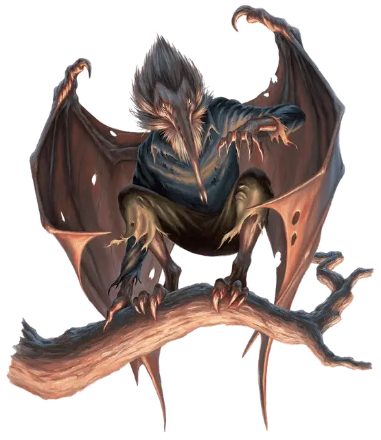

Стригой
Strigoi
Средний Монстр

Класс Доспеха 16 (природный доспех)
Хиты 52 (7к8 + 21)
Скорость 30 футов, летая 40 футов
| мод | спас | ||
|---|---|---|---|
| СИЛ | 17 | +3 | +5 |
| ЛОВ | 14 | +2 | +4 |
| ТЕЛ | 16 | +3 | +3 |
| мод | спас | ||
|---|---|---|---|
| ИНТ | 11 | +0 | +0 |
| МДР | 17 | +3 | +5 |
| ХАР | 10 | +0 | +0 |
Навыки Восприятие +5, Скрытность +6
Сопротивление урону некротическая энергия
Иммунитет к состояниям испуг, очарование
Чувства тёмное зрение 120 футов, пассивное Восприятие 15
Языки Общий
Опасность 4 (1100 опыта)
Бонус мастерства +2
Особенности
Телепатия кровопийцы. Стригои могут магически управлять любым кровопийцей [stirge] в пределах 120 футов от себя, используя ограниченную форму телепатии.
Действия
Мультиатака. Стригои совершают одну атаку когтем и одну атаку хоботком.
Коготь. Рукопашная атака оружием: +5 к попаданию, досягаемость 5 фт., одна цель. Попадание: 7 (1к8 + 3) рубящего урона и 6 (1к12) урона кислотой.
Хоботок. Рукопашная атака оружием: +5 к попаданию, досягаемость 5 фт., одно существо. Попадание: 8 (1к10 + 3) колющего урона и 10 (3к6) урона некротической энергией, и стригой восстанавливает хиты, равные по величине нанесённому урону некротической энергией. Существо, хиты которого уменьшаются до 0 в результате этой атаки, умирает и не оставляет после себя ничего, кроме своей кожи и снаряжения.
Ненасытные дети (1 раз в день). Стригой магически призывает 1к4 + 2 кровопийц [stirge] в свободном пространстве, которое он может видеть в пределах 30 футов от себя. Кровопийцы [stirge] находятся под контролем стригоя и ходят сразу после него в порядке инициативы. Кровопийцы исчезают через 1 час, или когда стригой умирает или когда стригой отпускает их (никаких действий не требуется).
Описание
Первые стригои были созданы заклинателями, которые подвергли рои кровопийц [stirge] преобразующим заклинаниям. Другие стригои появились в результате магических эффектов, например как побочные продукты диковинных научных экспериментов и от кровопийц, сосавших насытившихся вампиров. Когда рождается стригой, неестественное существо переполняется инстинктивным голодом, который заставляет его впадать в кровожадное буйство вместе с роями осмелевших, кровососущих вредителей.
Стригои высасывают кровь, костный мозг и мягкие ткани из своих жертв, не оставляя после себя ничего, кроме пустой оболочки. Из-за ужасающей природы смерти, те, кто был убит стригоями, иногда восстают в виде бескостных [boneless].
Многие стригои ищут способы вернуться к своему прежнему образу жизни, поскольку вынуждены выпивать живых жертв. Другие, однако, принимают свою новую форму и подражают вампирам. Эти потенциальные кровососы-аристократы создают дворы кровопийц среди шершавых вилл, украшенных оболочками, и высасывают жизнь из любого, кто не признаёт их гротескную аристократичность.